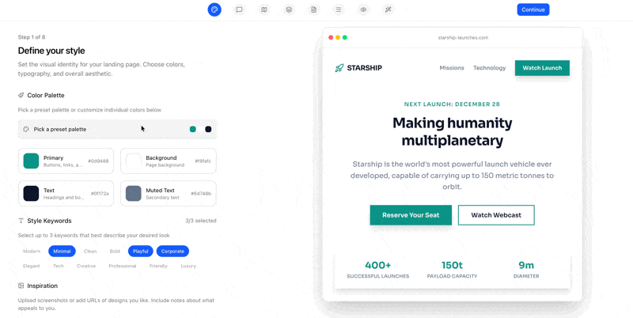

A CLI wizard that turns your landing page vision into structured, AI-ready prompts. Design the spec, then let your AI coding tool build it.

Run npx landfall init in your project. Creates a landfall/ directory with template config files.
Walk through 8 guided steps: style, tone, sitemap, sections, copy, navigation, preview, and build. Every change saves to JSON in real time.
Click Build. Landfall produces a sequence of focused prompts — style system, layout, then each section individually.
Copy the prompts into Claude Code, Cursor, Windsurf, or any AI coding tool. One at a time, in order. Watch your landing page come to life.
Guided flow covering colors, fonts, tone, page structure, sections, navigation, wireframe preview, and prompt generation.
12 section types (hero, features, pricing, FAQ, testimonials...) with 5 layout variants each. Pick the right structure visually.
Optional Model Context Protocol server lets AI tools pull prompts and report progress automatically. No more copy-paste.
No accounts, no cloud, no telemetry. Everything lives as JSON files in your project directory. Works offline.